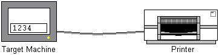
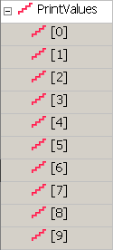

|
|
|
|
|
|
|
|
The following script uses the script driver and the read and write methods to send current variable values along with the variable names to the printer. The script runs every hour and prints the names and values of important variables in the project.

Add the script driver and rename it Print_Variables.
See Section 18.8.3, Setting up the Script Driver.
Connect the equipment to the defined COM port.
See Section 18.8.4, Cable Connections.
Set up the variable.
|
 |
PrintValues Integer variable with 10 elements. The name and value of each element in this variable is sent to the printer. |
The script is an application script that runs on the hour and prints the values in the PrintValues variable array.
Create a action script with the following properties:
Trigger Type: Conditional
Trigger Variable: _Hour (system variable)
Trigger: On Data Change
Open up the action script and write the following script to send the variable names and values to the printer.
// 1. Printer control characters
byte LineFeed = (byte) 0x0a; // Line Feed
byte CarriageReturn = (byte) 0x0d; // Carriage Return
byte FormFeed = (byte) 0x0c; // Form Feed
// 2. Printer buffer and other variables
byte PrintBuffer[] = new byte[1024];
char[] sendToPrinterTMP; // temporary char array
byte sendToPrinter[]; // byte array for each variable
int numOfChar = 0, // string length
i, j, k, BufferPosition = 0;
// 3. Print variable values
for (i=0; i<10; i++)
{
// a. Create a String with the variable name and value
String LocalMessage = "PrintValues" + "[" + i + "]";
LocalMessage.concat(" = " + PrintValues[i].getStringValue());
// b. Convert from String to character array
numOfChar = LocalMessage.length();
sendToPrinter = new byte[numOfChar]; // define size of byte array
sendToPrinterTMP = LocalMessage.toCharArray();
// c. Convert unicode character array to ASCII byte array
for (j=0; j<numOfChar; j++)
{
sendToPrinter[j] = (byte)sendToPrinterTMP[j];
}
// d. Move characters to print buffer array
for (k=0; k<j; k++)
{
PrintBuffer[BufferPosition++] = sendToPrinter[k];
}
// e. Change to a new line
PrintBuffer[BufferPosition++] = LineFeed;
PrintBuffer[BufferPosition++] = CarriageReturn;
}
// 4. Change to a new page
PrintBuffer[BufferPosition++] = FormFeed;
// 5. Send the buffer to the script driver
Print_Variables.write(true, BufferPosition+1, PrintBuffer);
Create local script variables for printer commands: new line, line feed, and carriage return. These variables will simplify the writing, reading, and maintenance of the script.
Also required by the script are byte and character arrays for the print buffer and temporary storage of strings, and integer variables for various indexes.
These lines of script generate the variable names and values and output these to the PrintBuffer variable.
a. Create a String with the variable name and value: The script creates a local String variable and assigns it the name of the variable and value that will be printed.
b. Convert from String to character array: The script first uses the number of characters in the String to define the size of a new byte array. Next, the script converts the local String variable into a character array.
c. Convert unicode character array to ASCII byte array: The script typecasts each character in the character array into a byte and assigns it to the corresponding element in the newly created byte array. Each element in the byte array is now equivalent to an ASCII character.
d. Move characters to print buffer array: The script copies the byte characters from the temporary byte array into the PrintBuffer byte array.
e. Change to a new line: The script adds printing format characters at the end of the message to change to the next line.

You cannot send a String directly to the script driver. First convert the String to a byte array.
After all the variable names and values are added to the PrintBuffer byte array, the script adds the page feed control character to the end.
The script sends the PrintBuffer byte array to the script driver.
The first parameter is false because the receive buffer (script driver serial port) is not used to receive any information from the printer.
The second parameter uses the BufferPosition variable because it tracks the last element number used in the PrintBuffer byte array. We need to add 1 to BufferPosition because array element numbers start at position 0.
The third parameter is the PrintBuffer byte array, which stores all the variable names and values and printer control characters in the PrintValues integer array.